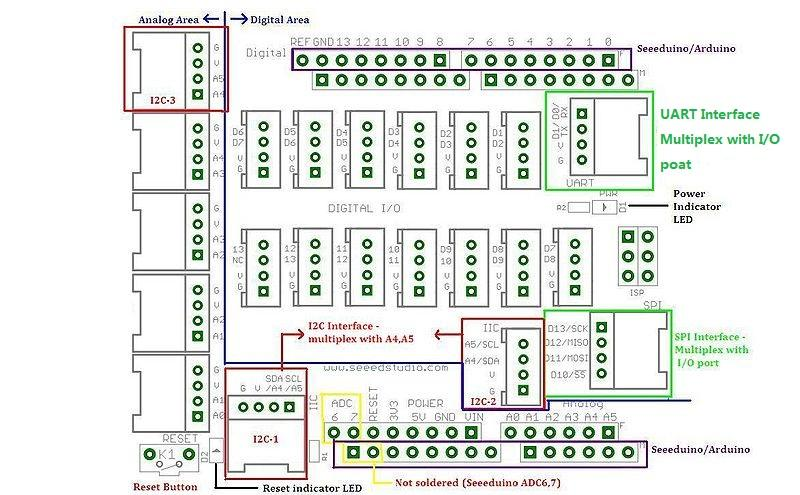

The Grove system is a modular, safe and easy to use group of items that allow you to minimise the effort required to get started with microcontroller-based experimentation and learning. Although there are many choices available for microcontroller development environments, the Grove system will work very well with the Arduino system.
What is new in Grove Starter Kit v1.0b:
The Grove Starter Kit v1.0b consists of the following items, as pictured below:
Now let's look at each component in more detail.
First we start with the Grove base shield board. Grove - Base Shield is the new version of Electronic Brick Shield.The Basic Shield is compatible with Seeeduino v2.21 (168p and 328p), and Arduino UNO and Duemilanove. We standardize all the connectors into 4 pins(Signal 1,Signal 2,VCC and GND) 2mm connectors, which simplify the wiring of electronics projects. The 4pins buckled connectors also make the wiring a snap. We built many different kinds of Grove to match up with Base Shield, and if you have existing Electronic Brick modules, you don't have to worry about compatibility--we have various converter cables that address compatibility between these two systems. This is very similar to an Arduino shield, and of course, can be used with our Seeeduino or Mega board, as well as other Arduino-compatible boards. In v1.0b, we move in the analog connectors slightly so that it will clear the higher power connector and USB connector. Here is a top-down view:

The purpose of the Grove - base shield is to allow easy connection of any microprocessor input and output pins to the small units. Each socket is clearly labeled with its matching I/O pin. For a more detailed examination of the Base Shield, please consider the following diagram:

For those working with Seeduino or Arduino boards, the layout should be quite familiar. The labels on the "Power" header pins may be confusing - the new Arduino Uno has two ground pins between the Vin and 5v, and label "GND" twice, but the Grove labels match the Duemilanove which label "GND" once, wider, to indicate both pins.
There is one small thing to take note of when connecting to analog or digital sockets. Each socket contains 5V, GND, and two I/O pin connections:

When using the digital I/O, note the staggered alignment of the pins – that is, one socket handles D1 and D2, the next D2 and D3, and so on. If you are going to use an input the small unit and an output unit which have two signal pins simultaneously, separate your wires so that an empty socket is between them, like this:

Wires for two signal Grove modules cannot sit side-by-side on the Base board because one pin (such as D2) will be shared with adjacent sockets. However, if two Grove only use one digital pin each, such as the tilt switch and the piezo, they can use adjacent sockets on the Base board, since they only use one of the digital lines in the connecting wire and therefore will not interfere with the other. It is the same as the Analog I/O sockets. Make sure you know look at the silkscreen of each socket before you start wiring.
(Note: The starter Kit v1.0b does not have two signal pins Grove modules)
Each "Grove unit" is a peripheral board that connects to the Grove System Grove - Base shield using a consistent 4-wire connectorised cable. The connector leads are Ground, Vcc, D2, and D1, where the D1 and D2 leads may be digital or analog input or output, depending on the equipment on the Groves. The same format also supports I2C (IIC) signalling, and several of the Base shield connectors are tied to Analog pins 4 and 5 to support it for future I2C-based Groves .
Most of the Groves use a 2cm x 2cm format, looking like jigsaw puzzle pieces which fit together with tabs, and bring the Ground and Vcc out to the corners and the D1 and D2 out to each side.
(Request for description from the designer - the pieces don't actually snap together, so I can't tell if there's any way to use the connectors on the edges. Are they meant to connect to header pins on a metric-spaced breadboard? Are they meant to connect I2C Grove units together, or are there other reasons to connect non-I2C Grove units like that?)
A circuit diagram would look really nice here.
Next, let's examine each of our “Grove units”, and then use each on in an example Arduino sketch that we can use with our Seeeduino boards...

This new version of button Grove contains one independent button, which are configured with pull-down resistor – ready for use with our microcontrollers as digital input. The button signals the SIG wire,NC is not used on this Grove .
ButtonSchematic


The tilt switch Grove is the equivalent of a button, and is used as a digital input. When the switch is level it is open, and when tilted, the switch closes. It is wired to the SIG line, NC is not used on this Grove. There's a surface-mount resistor .
Tilt switch Grove Schematic


This new version of LED Grove consists of one green LED. It operates from 5V DC. Perfect for use on Seeeduino digital outputs, or also can be controlled using pulse-width modulation. Each LED has a current-limiting resistor, which protects the LED and the Arduino from high current.
LED Grove Schematic


The potentiometer Grove produces analog output between 0 and Vcc (5V DC with Seeeduino) on its D1 connector. The D2 connector is not used. The angular range is 300 degrees with a linear change in value. The resistance value is 10k ohms, perfect for Arduino use. This may also be known as a “rotary angle sensor”.
Potentiometer Schematic

The temperature sensor Grove uses a thermistor which returns the ambient temperature in the form of a resistance value, which is then used to alter Vcc (5V with our Seeeduinos). Our board then converts this voltage value measured by an analog input pin to a temperature. The operating range is -40 to 125 degrees Celsius, with an accuracy of ±1.5ºC.
As the temperature increases, the resistance value of the sensor decreases:

Although the calculation of the actual temperature can seem quite complex, it is simple to execute. For an example of how this is done, please refer to project seven described later in this guide.
Temperature Sensor Grove Schematic

This is a simple yet enjoyable Grove to use. The piezo can be connected to digital outputs, and will emit a tone when the output is high. Alternatively it can be connected to an analog pulse-width modulation output to generate various tones and effects.
Buzzer Grove Schematic


The Grove-Relay module is a digital normally-open switch. it is controlled by a relatively low voltage(5V) pin(D1) and is capable of switching a much higher voltages and currents. When set the control pin (D1) to HIGH, the port "Com" and "On" will be connected and the LED will be light, when set to low, these 2 ports will be disconnected and the LED will go out. The maximum voltage and current that can be controlled by this module upto 250V at 10 amps.
When using this with an XBee Carrier, please be aware that you should set out 16 low to ensure that the mosfet on the XBee carrier provides enough power to reliably pull in the relay
Please exercise great care when working with high voltages – if in doubt please contact a professional such as a licensed electrician for help.
Relay Schematic


This consists of two parts, a module holding an 16 character by 2 line LCD, and the Grove itself(most may receive the two-units-soldered together-version). The LCD has an interface that is easily used under the Arduino IDE using the special Seeedstudio SerialLCD library.
Before using your LCD Grove , download the library from: http://garden.seeedstudio.com/images/1/19/SerialLCD-Library.zip ,or click Seeedstudio SerialLCD library. Then extract the “SerialLCD-Library.zip” folder and copy it into your Arduino libraries folder, usually located at ..\Arduino-xx\libraries.
Please see project six described later on in this guide.For a detailed information on how to use your Serial LCD Grove, you can go to Grove - Serial LCD page,there are plenty of examples.
Note: when you have connected Serial LCD to Base Shield and downloaded the example to the Seeeduino/Arduino, make sure you reset the Seeeduino/Arduino first, then push the Serial LCD's reset button.

This Grove allows you to add your own circuitry or components to your Grove system prototypes. This allows you access to all four lines from the connector cable – S0, S1, VCC and GND. There is also an extra normally-open button to take advantage of. The hole spacing makes using normal DIP-format ICs and other components very simple. You may wish to purchase more for future use in advance.
The warnings and wrong operations possible cause dangerous.
It is the schematic, the circuit about Eagle resource like .pdf should linked here in order to avoid memory exhausted.
May include key specification and other specifications.
Here is how to assemble Starter Kit with Starter bundle harness V1.0.
http://www.seeedstudio.com/depot/images/product/sbundle01_03.jpg
For more information you can go to Starter bundle harness V1.0.
Includes important code snippet. Demo code like :
Demo code { }
Now you should be familiar with your Base Shield and Grove units, so let's examine them in more detail with the following projects:
They are written for use with the Arduino environment. All of the following projects can be made with only a Seeeduino board and the Grove starter Kit. If you have not already done so, download and install the latest version of the Arduino IDE from: http://arduino.cc/en/Main/Software.
Furthermore, if you are using a Seeeduino or Seeeduino Mega, make sure you have the switches set to 5V and auto, as such:
This ensures the board is running at 5V DC from the USB cable, and that the board will auto-reset upon uploading your sketch. Otherwise you will have to manually reset your Seeeduino before the sketch starts operation.
By now we hope you have enjoyed experimenting with your Seeeduino and the Grove starter Kit. You will find it simple and convenient to use this system to develop your ideas and prototypes. For technical support please email info@seeedi.com.
In the meanwhile, don't forget to regularly check the Seeedstudio Bazaar website for new Grove units and other interesting and useful products at: http://seeedstudio.com/depot/
For more question and suggestions, please list them here:
If you have questions or other better design ideas, you can go to our forum or wish to discuss.
| Revision | Descriptions | Release Date |
| GROVE Starter Kit v1.0b | draft release | Dec 31, 2010 |
There is no bug found until now. Have you found? Please write them here, we want to know what you have to say!
What do you think of our GROVE System and GROVE - Starter Kit? Don't forget that we always welcome your views on our goods and services so that we can continue to meet all your stock requirements. You can write them here or go to Seeedstudio Wish page.
File:Grove relay eagle files.zip Grove relay eagle files
Click here to buy GROVE - Starter Kit ,or other products you like.
Other related products and resources.
This documentation is licensed under the Creative Commons Attribution-ShareAlike License 3.0 Source code and libraries are licensed under GPL/LGPL, see source code files for details.
Links to external webpages which provide more application ideas, documents/datasheet or software libraries
Copyright (c) 2008-2016 Seeed Development Limited (www.seeedstudio.com / www.seeed.cc){kind=link}